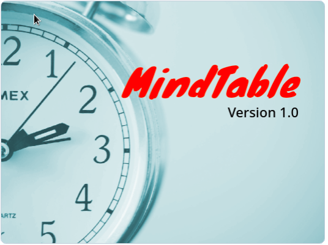

Az applikáció

Applikációnkat az autizmus spektrum zavarral élő gyerekek jól bevált technikái alapján készítettük el. A programot elsősorban nagyobb gyerekeknek szánjuk,
de akár a felnőttek is találhatnak benne hasznos eszközöket. Témánkat elsősorban az egészséges élet, a tisztálkodás, a sport és a tanulás
témakörre készítettük.
Napirend
Az program fő oldalán egy szöveg alapú napirendet tudunk létrehozni. A napirendhez hozzáadhatunk, törölhetünk tevékenységeket. Az elkészült napirendet txt formátumban tudjuk elmenteni, és betölteni (kis nézeten jobbklikk).
Ezen az oldalon nagy gondot fordítottunk az egyszerű és gyors kezelhetőségre.
Modulok
A napirendet kiegészítettük különféle modulokkal. Vannak modulok, amelyekért pontszámot kaphatunk. Például sportolásért, tanulásért, tisztálkodásért.
Azt is beállíthatjuk, hogy hány percenként figyelmeztessen az applikáció, hogy innunk kell, illetve a fürdés és a fogmosás idejét is mérhetjük a segítségével.